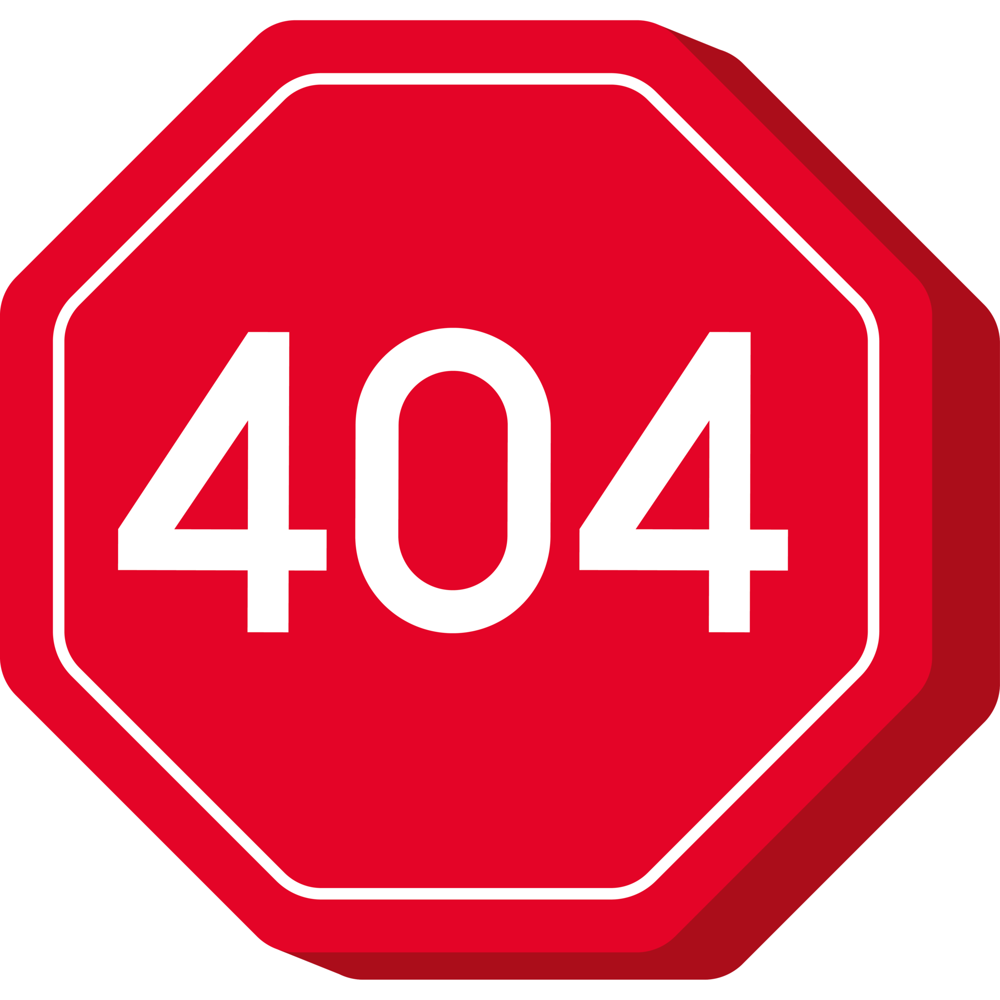

<ion-content [fullscreen]="true" class="background">
  <div class="img-logo">
    
  </div>
  <ion-text>
    <h2 style="color: white;" class="ion-text-center">Page not found.</h2>
    <div class="ion-text-center">
      <button mat-fab class="boton-reserva" [routerLink]="['/login']">
        Back to login
      </button>
    </div>
  </ion-text>
</ion-content>